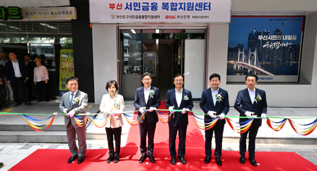
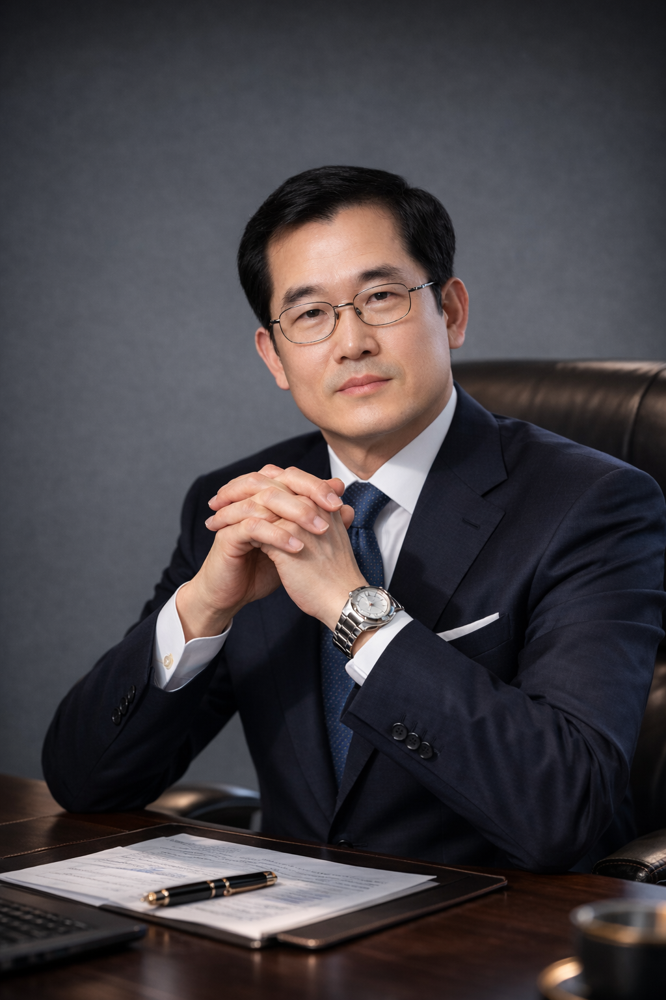

비영리 서민금융
제도권 금융 이용이 어려운 분들의 경제적 자립을 돕는 공익 목적의 금융을 수행합니다.

OUR PURPOSE
(사)미소금융부산중구법인은 제도권 금융 이용이 어려운 분들의 경제적 자립을 돕는 서민금융진흥원 사업수행기관입니다.
무담보·무보증 정책금융과 자립 컨설팅을 함께 연결하며, 소상공인·자영업자, 청년과 금융취약계층, 사회적경제기업의 내일을 지원합니다.
FINANCE WITH A PURPOSE
제도권 금융 이용이 어려운 분들의 경제적 자립을 돕는 공익 목적의 금융을 수행합니다.
상품별 지원요건과 심사를 바탕으로 상황에 맞는 정책서민금융을 안내합니다.
자금 지원과 함께 경영·재무 등 비금융 상담을 연결해 안정적인 내일을 준비합니다.

A MESSAGE FROM OUR REPRESENTATIVE
안녕하십니까, (사)미소금융부산중구법인 대표 이성욱입니다.
저희 법인은 제도권 금융의 문턱을 넘기 어려운 분들에게 경제적 자립의 초석을 마련해 드리기 위해 설립된 서민금융진흥원 사업수행기관입니다.
단순한 자금 지원을 넘어, 여러분이 마주한 삶의 현장을 이해하고 실질적인 자활의 길을 함께 모색하는 것이 저희 법인의 핵심 사명입니다.
다시 일어서고자 하는 의지가 있다면 언제든 문을 두드려 주십시오. 새로운 도약을 향한 걸음에 변함없는 동반자로 함께하겠습니다.
OUR JOURNEY
작은 시작이 모여, 더 큰 가능성을 만듭니다.
2009년 법인 설립, 2010년 1월 부산 중구지점 개소. 지역 서민금융 지원을 시작했습니다.
서민금융 지원체계 통합·정비에 따라 사업수행기관으로 전환했습니다.
코로나 피해 소상공인 지원과 비대면 상담을 이어갔습니다.
부산신용보증재단 업무협약, 부산시 비타민 플러스 협약 등 지역 협력을 넓혔습니다.
사회연대금융과 청년·금융취약계층 특화상품을 안내하고 자립 지원을 강화했습니다.
경남사회적기업협의회 MOU 체결, 미소금융 상반기 워크숍 우수기관 포상.
부산 서민금융복합지원센터 개소 참여와 부산형 포용·상생금융 업무협약.
OUR ORGANIZATION
법인의 조직체계와 임원 구성을 안내합니다.
이사장·이사 구성
이성욱
은행 지점장 역임
김*하
은행 지점장 역임
정*기
자영업자
김*종
요양병원 부원장 역임
이*현
대학 교수 역임
OUR COMMUNITY IN FOCUS
현장에서 이어가는 협력과 배움의 이야기를 만나보세요.
LET’S TALK
나에게 맞는 지원이 있는지,
전화 한 통으로 먼저 이야기 나눠보세요.
미소금융 부산중구법인
주말·공휴일 휴무 · 방문 전 전화 문의 권장
네이버 지도로 길찾기